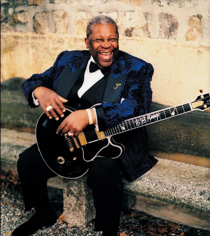

1. This is one of my favorite animated films from last year, from love death and robots season 3 jibaro. It's hard to imagine that many of these backgrounds and scenes were drawn rather than modeled. Its amazing details, colors, sound effects, action design, and so on are all fascinating, not to mention the stories about humans and siren and the metaphors about greed, desire and so on that it contains are thought-provoking. Here are a few of them, but the brilliance and magnificence it is fully revealed.
Jibaro2. I've been learning a bit about the history and music of blues, and my favourite blues artist is B.B. King, one of the greatest blues musicians. His songs and music are full of emotions, smooth and natural, which makes me feel warm and relaxed. Appreciating his works always makes me feel that I am listening to an elder or warm friend telling their mood and past stories, and I really enjoy the feeling of being immersed in them. Let's enjoy this moment together.
 B.B. King3. This is a piece of pure music played by the traditional Chinese instrument Pipa - Pipa language. Whenever I have insomnia late at night, I turn on this music. It makes me relax and easily enter meditation.
Pipa language